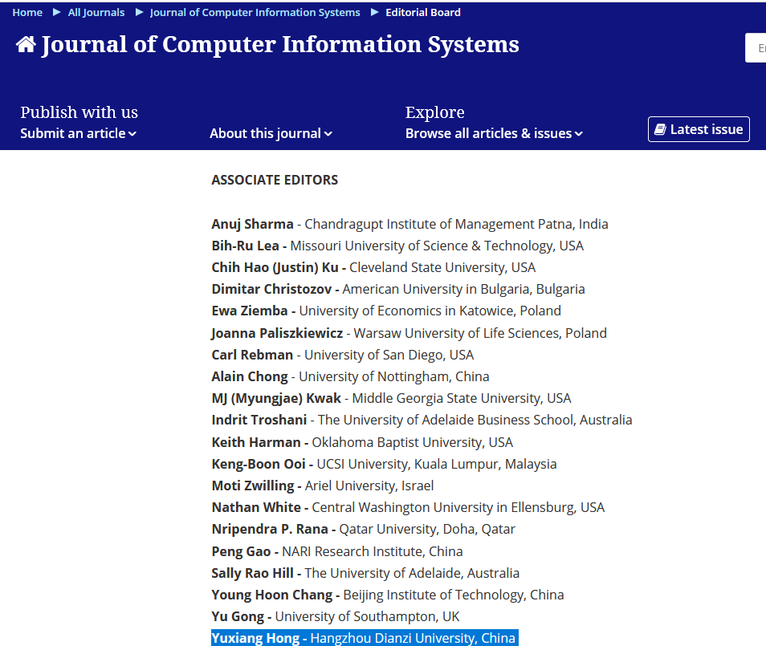

最近更新
论文被Journal of Health Organization and Management录用
June20, 2022
和研究生赵嘉卿等合作的论文“Quality of Life and Emergency Preparedness Behavior of MHO Staff: Role of Psychological Capital and Perceived Organizational Support"被Journal of Health Organization and Management（SSCI, ABDC/ABS list）录用。
论文被Journal of Cleaner Production 和 Sustainable Cities and Society录用
June6, 2022
和四川大学张梦凡博士合作的论文“Does national innovative city pilot policy promote green technology progress? Evidence from China” 以及 "Impacts of environmental constraint target on green innovation efficiency: Evidence from China" 分别被Journal of Cleaner Production 和 Sustainable Cities and Society录用。
受邀担任国际期刊Journal of Computer Information Systems 副主编
May11, 2022
近日，收到信息管理领域国际知名期刊《Journal of Computer Information Systems》主编Alex Koohang教授的邀请，正式担任该期刊副主编（Associate Editor）。《Journal of Computer Information Systems》是SCI检索的信息管理领域国际知名期刊，是国际计算机信息系统协会（IACIS）的官方期刊，澳大利亚商学院院长理事会（ABDC）A类期刊，ABS 2星，CCF和FMS推荐期刊。

论文被Journal of Intellectual Capital录用
May10, 2022
和四川大学张梦凡博士合作的论文“Bridging the regional innovation policy and entrepreneurship: the role of intellectual capital”被国际期刊Journal of Intellectual Capital录用，该期刊是SSCI检索，ABS/ABDC/FMS推荐期刊，影响因子7.198。
Call For Papers （截止日期：2022年5月6日）
Oct18, 2021
Special issue on Insider Threats in Cyber Security
The human and technological aspects of cyber security must be simultaneously addressed to enable a secure information environment. The behavior of insiders is a recognized and significant source of incidents. Insider threats can have both intentional and unintentional origins. Therefore, building security culture, cultivating information security awareness, and effectively motivating security behaviors are important ways to reduce related risks.
This special issue seeks original research and review articles relating to insider threats, contributing to theoretical development and supporting advancements in practice. Interdisciplinary contributions are welcome, recognizing that insider threats span different areas, including IT, system science, psychology, economics, and management.

专刊汇编成书印发
Feb, 2022
Environmental Disasters and Individuals’ Emergency Preparedness: In the Perspective of Psychology and Behavior
Environmental disasters are becoming more frequent. These disasters not only include the most common natural disasters, but also include man-made disasters, such as public health, accident
disasters, etc., which have caused greater damage to human society and cities. Because of the limitations of a single government-led model in emergency response, the emergency preparedness
of communities, families and individuals are more important. In particular, the emergency preparedness psychology and behavior of individuals directly determine whether or not they can
effectively protect themselves and their families in the first time of disaster. This Special Issue focuses on environmental disasters and individuals’ emergency preparedness in the perspective of
psychology and behavior.

完成今年ICISSP项目委员会工作
Feb, 2022